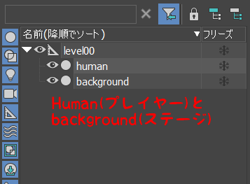
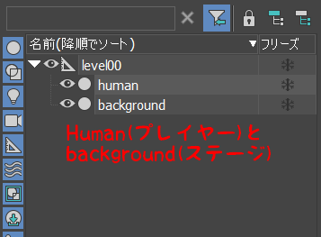
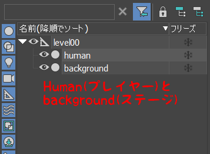
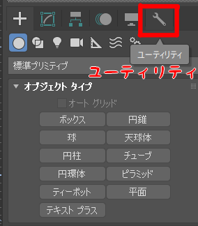
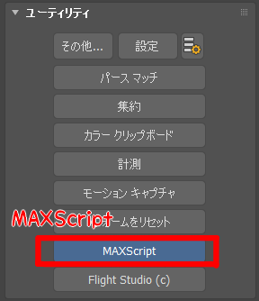
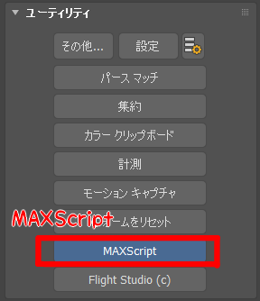

1.1 概要
1.2 レベルについて
1.3 EnemyとBossの配置
- //レベルを構築する。
- m_levelRender.Init("Assets/level3D/level.tkl",
- [&](LevelObjectData& objData)
- {
- //名前がhumanだったら。
- if(objData.EqualObjectName(L"human") == true)
- {
- //プレイヤーのオブジェクトを作成する。
- m_player = NewGO<Player>(0,"player");
- //座標を設定する。
- m_player->SetPosition(objData.position);
- //回転を設定する。
- m_player->SetRotation(objData.rotation);
- //trueにすると、レベルの方でモデルが読み込まれます。
- return true;
- }
- //名前がbackgroundだったら。
- else if(objData.EqualObjectName(L"background") == true)
- {
- //背景オブジェクトを作成する。
- m_background = NewGO<BackGround>(0, "background");
- //座標を設定する。
- m_background->SetPosition(objData.position);
- //大きさを設定する。
- m_background->SetScale(objData.scale);
- //回転を設定する。
- m_background->SetRotation(objData.rotation);
- return true;
- }
- return true;
- });
この章で学ぶこと
・教材の概要
・レベルについて
・オブジェクトの配置
ゲームプログラミング1では、簡単なアクションゲームを制作しました。
こちらの教材では、もっと複雑なアクションゲームを作っていこうと思います。 今回制作するゲームの完成品は、こちらになります。


こちらの教材では、もっと複雑なアクションゲームを作っていこうと思います。 今回制作するゲームの完成品は、こちらになります。
ゲームの大まかな流れとしては、プレイヤーを操作して敵を全て倒したらゲームクリアという感じです。
また、ステージにはレバーやドアといったギミックが配置されています。
それでは、Game.slnからVisual Studioプロジェクトを立ち上げて、実行してみてください。
ゲームパッドの左スティックで移動、右スティックでカメラ回転、A、Y、Yボタンでプレイヤーが何らかの行動をします。
また、ステージにはレバーやドアといったギミックが配置されています。
それでは、Game.slnからVisual Studioプロジェクトを立ち上げて、実行してみてください。
ゲームパッドの左スティックで移動、右スティックでカメラ回転、A、Y、Yボタンでプレイヤーが何らかの行動をします。
このゲームの制作を通じて、レベル・AI・ステート・当たり判定・エフェクト・アニメーションイベントなどについて学んでいきたいと思います。
早速ゲームを制作していきたい所ですが、その前にレベルという概念について解説します。
レベルとは、STAGEやWAVE、SECTIONなどの1つの「面」のことを言います。具体的な例を挙げると、スーパーマリオブラザーズのワールド1-1などです。
さらに、そのレベル(面)を作り上げる作業(オブジェクトの配置など)のことを、レベルデザインと呼びます。
この章ではレベルデザインの一種である、オブジェクトの配置を行っていきます。
レベルについて詳しく知りたい方は、下記のサイトを参照してください。
レベルデザインの「レベル」って何だ？──ボックス、メイズ、パーセクにマウンテン!? ゲームの「面」の呼びかたいろいろ やる夫と学ぶ ゲームが変えた日本語
レベルとは、STAGEやWAVE、SECTIONなどの1つの「面」のことを言います。具体的な例を挙げると、スーパーマリオブラザーズのワールド1-1などです。
さらに、そのレベル(面)を作り上げる作業(オブジェクトの配置など)のことを、レベルデザインと呼びます。
この章ではレベルデザインの一種である、オブジェクトの配置を行っていきます。
レベルについて詳しく知りたい方は、下記のサイトを参照してください。
レベルデザインの「レベル」って何だ？──ボックス、メイズ、パーセクにマウンテン!? ゲームの「面」の呼びかたいろいろ やる夫と学ぶ ゲームが変えた日本語
それでは、オブジェクトの配置を行っていきましょう。
まず、Assets/level3D/stage.maxを開いてください。

 


まず、Assets/level3D/stage.maxを開いてください。
そうすると、以下のように背景とhuman(プレイヤー)が配置されていると思います。

ゲームを起動した際に、ステージとプレイヤーが配置されていましたが、その配置はこの3dsmaxのデータを元に配置が行われています。
それでは、実際にコードを見てみましょう。Game.cppを開いてください。
それでは、実際にコードを見てみましょう。Game.cppを開いてください。
こちらのコードで、先ほどの3dsmaxの配置データを読み込んで、ステージとプレイヤーを配置しています。「level.tkl」というファイルが、3dsmaxの配置データを記録したファイルになります。
それでは、実際に3dsmaxを使用してオブジェクトを配置してみましょう。
それでは、実際に3dsmaxを使用してオブジェクトを配置してみましょう。
では、3dsmaxに戻って、右側の「ユーティリティ」→「MAXScript」→「スクリプトを起動」から、デスクトップの「tkExporterのショーットカット」を選択してください。



そうすると、「ユーティリティ」に下記のような項目が追加されたと思います。